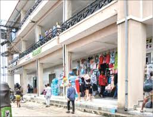
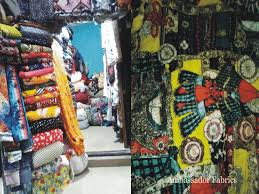
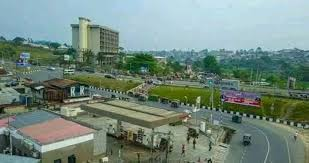

Ariaria International Market
Often called the largest market in West Africa, Ariaria is the center of local manufacturing, fashion production, leather works, and commerce.
Aba is known for its bustling commercial activities, thriving markets, sports culture, and entrepreneurial spirit. Visitors can explore several locations that showcase the city's importance within Nigeria.

Often called the largest market in West Africa, Ariaria is the center of local manufacturing, fashion production, leather works, and commerce.

This market attracts thousands of buyers daily and is famous for food supplies, household items, and local trade.

Home to Enyimba FC, one of Nigeria's most successful football clubs and a major sporting landmark in Aba.
These locations contribute significantly to Aba's economy, culture, and reputation as a leading commercial city. They attract visitors, investors, traders, and sports fans from different parts of Nigeria and beyond.